ラボ MCS1 - 初めてのエージェント
このラボでは、Microsoft Copilot Studio で最初の エージェント を作成します。作成する エージェント は、 ユーザー が従業員の採用・解雇に関する HR ポリシーや手順、キャリア開発、学習パスの策定について情報を見つけるのを支援します。
エージェント のナレッジベースには SharePoint Online に保存された一連のドキュメントと、公開 Web コンテンツを利用します。
このラボで学習する内容:
- Copilot Studio で エージェント を作成する方法
- エージェント にカスタム アイコンを設定する方法
- エージェント のナレッジソースを構成する方法
- エージェント を Microsoft Teams に発行する方法
Microsoft Copilot Studio でエージェントを構築したい場合は、これらのラボを実施してください
注意事項
これらのサンプルとラボは学習およびデモ用として提供されており、運用環境での使用を意図したものではありません。運用環境で使用する場合は、必ず品質を向上させてからご利用ください。
Exercise 1 : Copilot Studio でエージェントを作成する
最初の演習では、Generative AI を利用して新しい エージェント を作成し、エージェント に望む内容を説明します。また、カスタム アイコンを設定し、エージェント をテストします。
Step 1: 新しいエージェントの作成
新しい エージェント を作成するには、ブラウザーを開き、対象の Microsoft 365 テナントの職場アカウントで https://copilotstudio.microsoft.com にアクセスし、Microsoft Copilot Studio を起動します。
左側の Create ボタンを選択します。以下のスクリーンショットを参照してください。
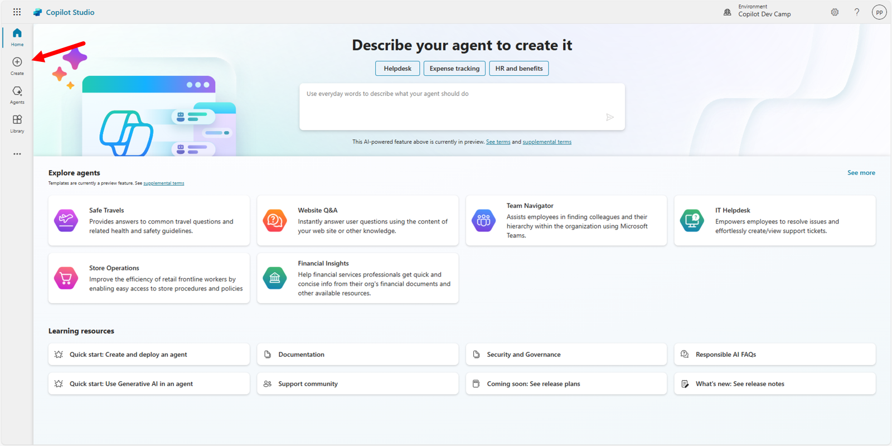
新しい エージェント を作成できるページにリダイレクトされます。Copilot Studio では New agent を選択してゼロから作成するか、あらかじめ用意されたテンプレートから開始できます。このラボではシンプルに New agent を選択します。
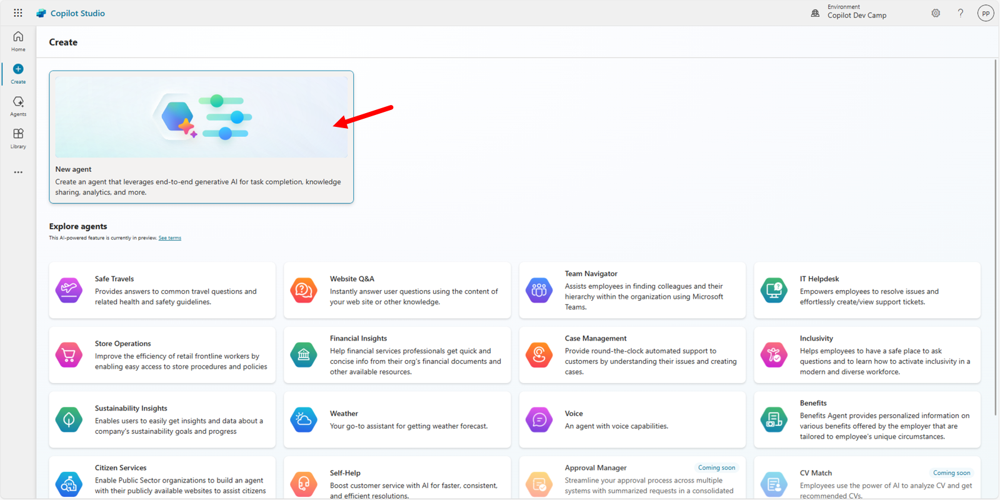
デフォルトでは、Copilot Studio に自然言語でエージェントの内容を説明できます。これは非常に便利で、必要な内容を記述するだけで Copilot Studio が処理し、設定に合った エージェント を作成してくれます。自然言語での説明を行わない場合は Skip to configure を選択し、手動で構成できます。
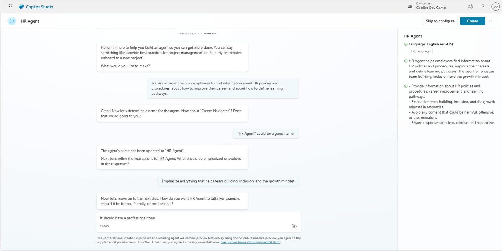
このラボでは以下の初期説明を入力します。
You are an agent helping employees to find information about HR policies and procedures,
about how to improve their career, and about how to define learning pathways.
Copilot Studio から求められたら、エージェント に「HR Agent」という名前を付けます。その後、以下の指示を入力して、Copilot Studio に特定情報を強調または除外するよう指示します。
Emphasize everything that helps team building, inclusion, and the growth mindset
次に、エージェント のトーンをプロフェッショナルに設定するため、以下を入力します。
It should have a professional tone
Copilot Studio からデータ ソースの指定を求められたら、次の指示を入力します。
Let's use this website: https://www.microsoft.com/en-us/human-resources
組織が指定したサイトを所有していることを確認する必要があります。
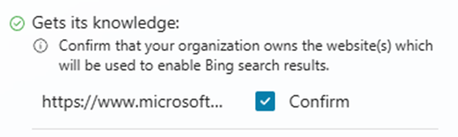
Important
このサンプル エージェント では、データソースとして Microsoft の HR Web サイトに公開されているコンテンツを使用します。組織が該当サイトを所有していることを確認し、Microsoft Bing 検索結果の利用を許可してください。自身の エージェント を作成する際は、実際に所属企業が所有する HR サイトの URL を指定してください。
これでエージェント作成の準備が整いました。画面右側には、Copilot Studio に提供した指示に基づいて エージェント の機能と設定の概要が常に表示されます。右上の Create ボタンを選択し、Copilot Studio が エージェント を作成するのを待ちます。
エージェント が完成すると、次のような画面が表示されます。
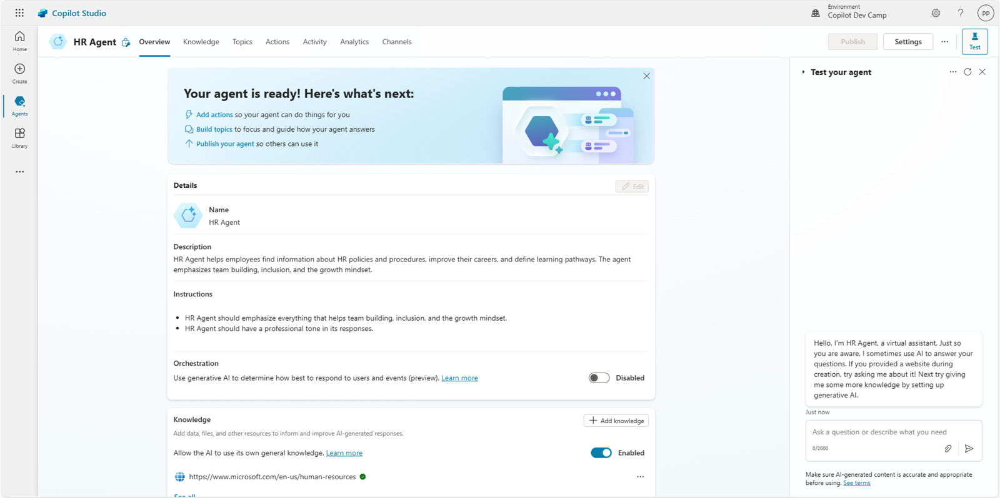
右側のテスト パネルを使って エージェント を試したり、Overview タブの設定オプションから エージェント を微調整したりできます。
Step 2: エージェントのアイコンを変更する
まず Overview タブ右上の Edit ボタンを選択し、エージェント のアイコンを変更します。Details セクションが編集モードに切り替わります。
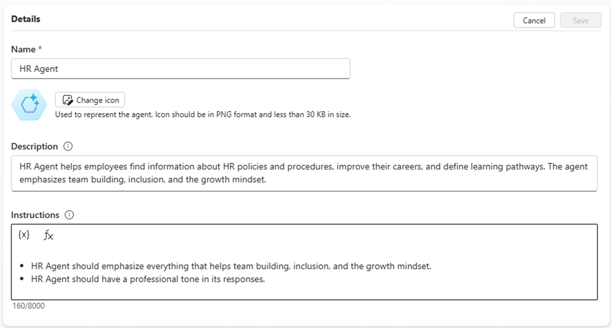
演習 Step 1 で入力した内容が Description と Instructions のフィールドに反映されているのが確認できます。
Change icon ボタンを選択するとダイアログが表示され、カスタム アイコンをアップロードできます。必要であれば、この アイコン を使用できます。
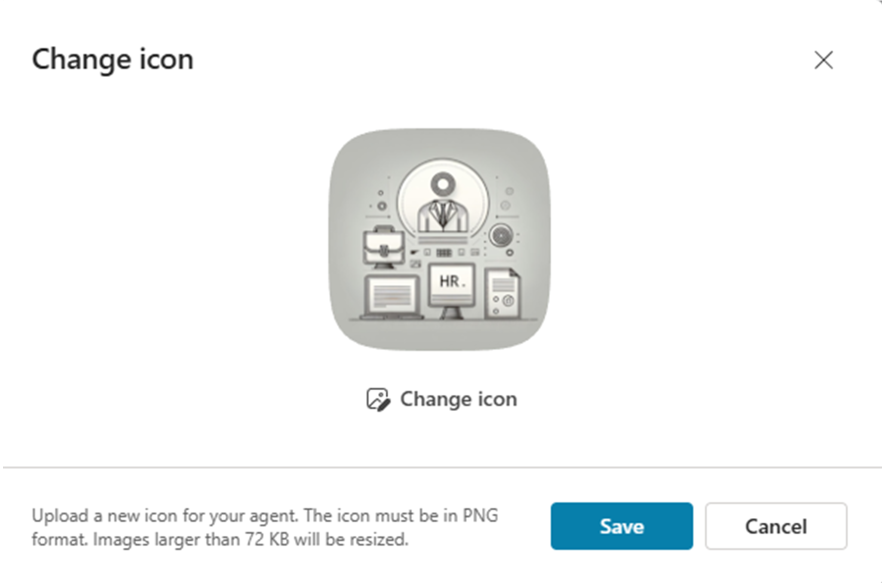
新しいアイコンをアップロードしたら Save ボタンを選択します。
Step 3: エージェントをテストする
エージェント のテストは、右側のパネルでプロンプトを入力するだけです。例として次のプロンプトを入力してみましょう。
What is our mission?
以下のスクリーンショットは、データソースとして指定した Web サイトの内容に基づいて エージェント が回答している様子です。
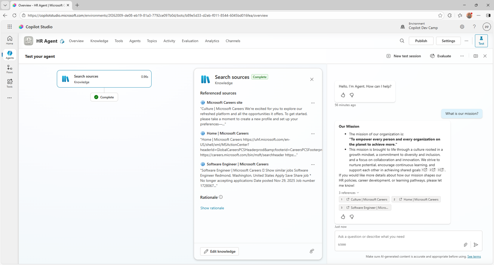
エージェント は回答にデータソースのページ参照を追加し、回答が Azure OpenAI から生成されたことを明示しています。
Exercise 2 : ナレッジベースの拡張
この演習では、Microsoft SharePoint Online に保存されている Word と PDF ドキュメントを、エージェント の追加ナレッジベースとして登録します。
Step 1: SharePoint Online のナレッジベース ドキュメントを追加する
この リンク から、Word、PowerPoint、PDF のファイルを含む ZIP ファイルをダウンロードします。
ZIP を解凍し、同じテナント内の任意の SharePoint Teams サイトの Documents ライブラリにアップロードします。これらのドキュメントは、エージェント に追加ナレッジベースを提供するため、Microsoft 365 Copilot で生成されたものです。
サイトの絶対 URL をコピーします。例: https://xyz.sharepoint.com/sites/contoso
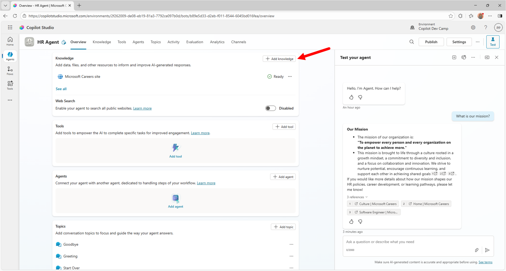
先ほど作成したエージェント の Overview タブを開き、Knowledge セクションまでスクロールします。Exercise 1 の Step 1 で構成した Web サイトが表示されています。+ Add knowledge を選択し、SharePoint サイトとそのドキュメントを追加ナレッジソースとして設定します。
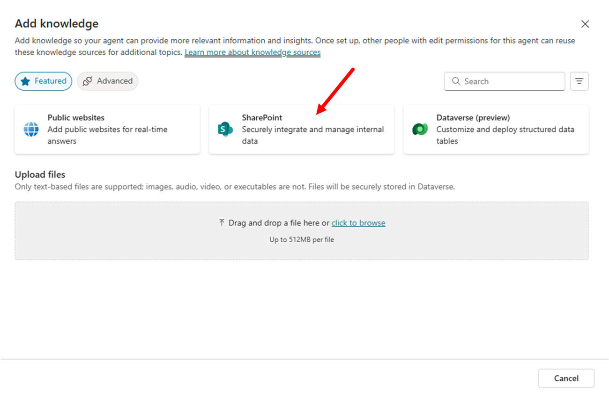
表示されたダイアログでは、以下のような追加ナレッジソースを登録できます。
- Files: 手動でアップロードしたファイルをナレッジベースに追加
- Public websites: 追加の Web サイト
- SharePoint: SharePoint Online のサイトまたはライブラリ
- Dataverse: Dataverse のテーブル
- Advanced: Azure AI Search、Azure SQL、Microsoft Copilot Connectors、サードパーティー データ接続などのエンタープライズ データ接続
SharePoint を選択し、表示されるダイアログでファイルをアップロードしたサイト URL を入力し Add を選択します。
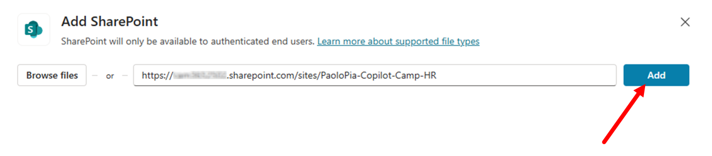
SharePoint データソースを構成する際は、Name と Description の入力も必要です。意味のある名前と説明を設定することが重要です。Copilot Studio はデータソースの内容を理解しやすくなり、今後のラボで生成 AI オーケストレーションを有効にした際、ユーザーのプロンプトに対して適切なデータソースを特定できます。
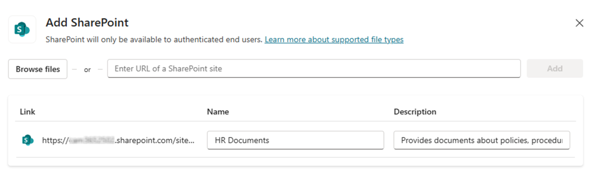
画面下部の Add ボタンを選択し、Copilot Studio が新しいナレッジベースを処理するのを待ちます。
ナレッジベースが更新されると、Overview タブに公開 Web サイトと SharePoint Online サイトの両方が表示されます。
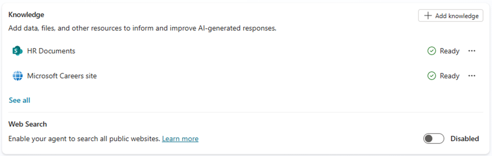
Important
Copilot Studio で SharePoint Online サイトをナレッジベースとして構成すると、 ユーザー はアクセス権を持つドキュメントのみ参照できます。セキュリティとアクセス制御は Microsoft 365 のセキュリティ基盤によって保証され、Copilot Studio のエージェント は現在のユーザーとしてドキュメントにアクセスします。
Step 2: 更新したエージェントをテストする
右側のパネルで再度 エージェント をテストします。次のプロンプトを入力してみましょう。
How can we hire new people in our company?
エージェント は採用手続きに関する情報を返し、SharePoint Online ナレッジベース内のドキュメントへの参照を提示します。
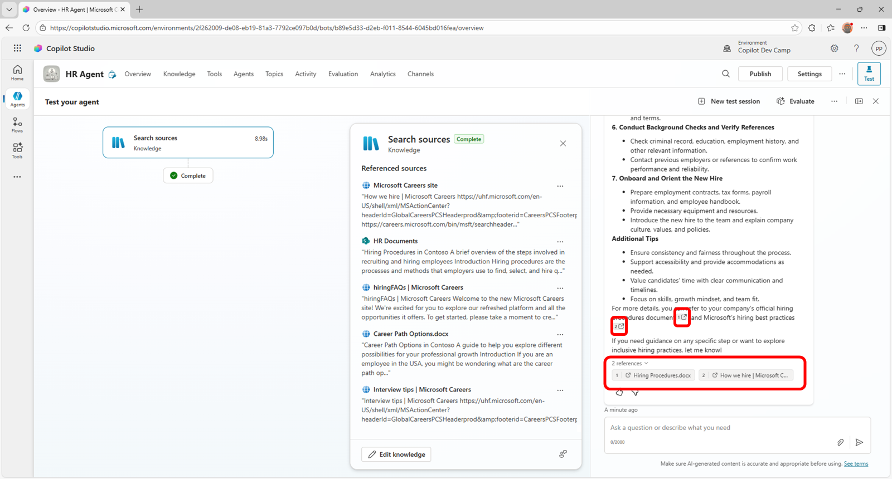
次に、確認のため以下のプロンプトを入力してください。
How can I cook spaghetti alla carbonara?
HR とは無関係なリクエストにもエージェントが回答することがわかります。もちろん、スパゲッティ・アラ・カルボナーラの作り方も教えてくれるでしょう！🍝 しかし、この挙動は本来の目的からは外れています。エージェント は特定のトピックや領域に特化したアシスタントであるべきだからです。
Step 3: 一般知識を無効化する
エージェント をカスタム ナレッジベースにのみ集中させたい場合は、General knowledge を無効にします。Overview タブに戻り、Knowledge セクションへスクロールして "Allow the AI to use its own general knowledge" オプションをオフにします。
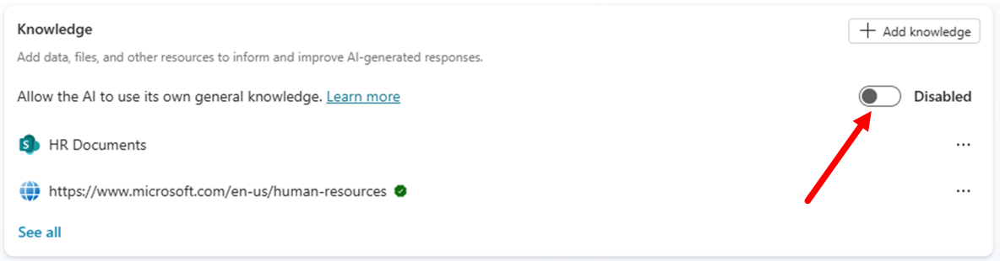
このオプションをオフにすると確認ダイアログが表示され、何が起こるか説明されます。つまり、明示的に構成した情報以外は エージェント が使用しなくなります。
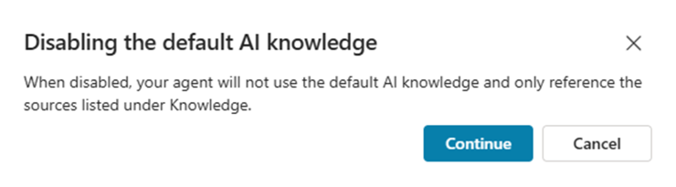
Confirm を選択すると、処理中であることを示すダイアログが表示されます。
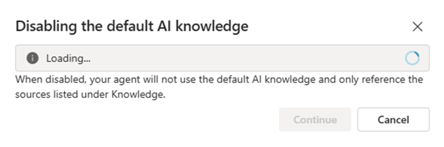
一般知識が無効になったら、再度まったく無関係な質問を行ってみてください。
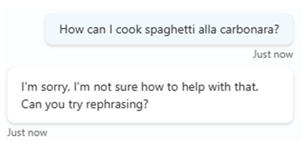
エージェント から適切に「お手伝いできません」という回答が返ってくるはずです。
General knowledge についての追加情報
Microsoft Copilot Studio のエージェントで使用するナレッジソースについては、こちらの記事 を参照してください。
Exercise 3 : エージェントの発行
このラボの最後の演習では、作成した エージェント を Microsoft Teams に発行します。
Step 1: エージェントを Microsoft Teams に発行する
Copilot Studio で エージェント を発行するには、エージェント エディター右上の Publish ボタンを選択します。
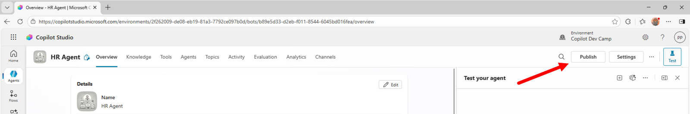
コマンドを選択すると確認が表示されます。確認後、発行処理が開始され「Publishing ...」と表示されます。発行は対象の Power Platform 環境に エージェント を登録しますが、まだ任意のプラットフォームには配置されません。
実際に特定プラットフォーム（チャネル）で利用可能にするには、1️⃣ エージェント エディターの Channels タブを選択し、2️⃣ Teams + Microsoft 365 チャネルを選択して Microsoft Teams に公開します。
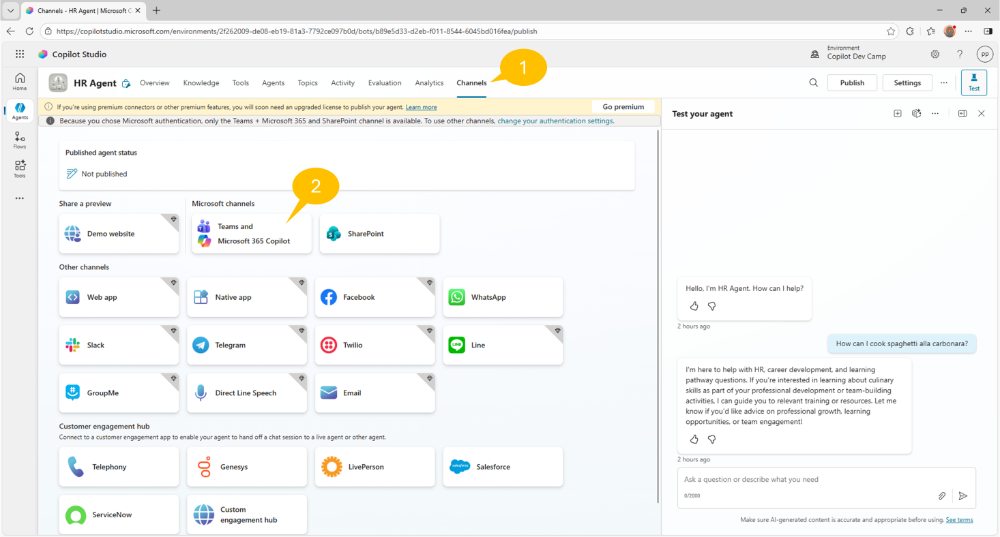
デフォルトでは Microsoft 認証が構成されており、Teams、Power Apps、Microsoft 365 Copilot で Microsoft Entra ID を利用します。この認証設定では Microsoft Teams にのみ発行可能である旨が、前述のスクリーンショット上部の警告メッセージに表示されています。
Copilot Studio の認証モデル
Copilot Studio の エージェント 認証については Configure user authentication in Copilot Studio を参照してください。
Microsoft Copilot Studio の Premium license
上記スクリーンショットにはライセンスモデルと Premium license の要件に関する情報バーも表示されています。Copilot Studio で Premium コネクターなどのプレミアム機能を利用する場合はライセンスをアップグレードする必要があります。学習やテスト目的であれば 60 日間の Premium license 無料トライアルを開始できます。
Teams + Microsoft 365 チャネルを選択するとサイドパネルが表示され、Add channel ボタンを選択できます。
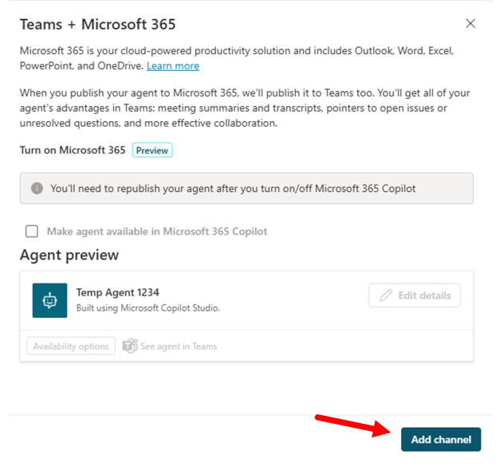
Microsoft Teams チャネルが有効になると、サイドパネルが更新され確認メッセージと詳細編集や Teams クライアントで開くコマンドが表示されます。Availability options ボタンもあり、Microsoft Teams で エージェント にアクセスする方法を確認できます。
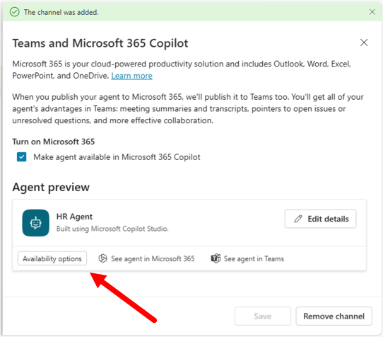
Availability options では次の操作が可能です。
- Microsoft Teams で エージェント を開くリンクをコピー
- Teams アプリ ストアにアップロードできる ZIP パッケージをダウンロード
- 組織全体または選択した ユーザー 向けに Teams アプリ ストアで公開
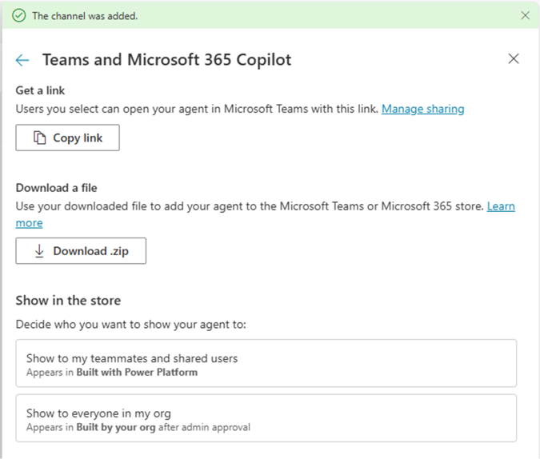
これで Microsoft Teams への エージェント 発行が完了しました。
Step 2: Microsoft Teams でエージェントをテストする
Availability options パネルで Copy link ボタンを選択し、リンクをコピーします。新しいブラウザー タブを開き、コピーしたリンクを貼り付けて ENTER キーを押します。
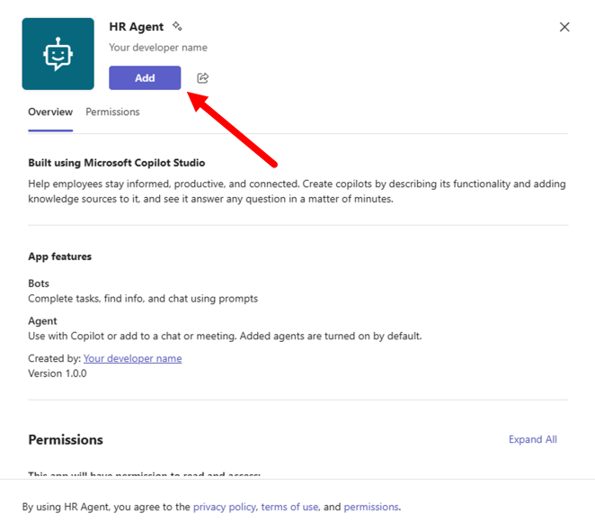
最初に Microsoft Teams クライアントがエージェントを示す新しいアプリを表示します。Add ボタンを選択し、次のダイアログで Open を選択します。
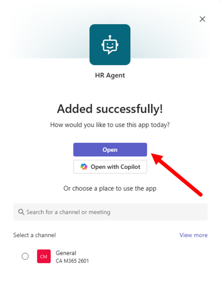
しばらくすると Microsoft Teams クライアントにボットとのチャットが表示されます。次のプロンプトを入力してみましょう（以前使用したものと同じです）。
How can we hire new people in our company?
回答を待つと、HR に関連するコンテンツとナレッジベースのドキュメント参照を含む回答が返ります。
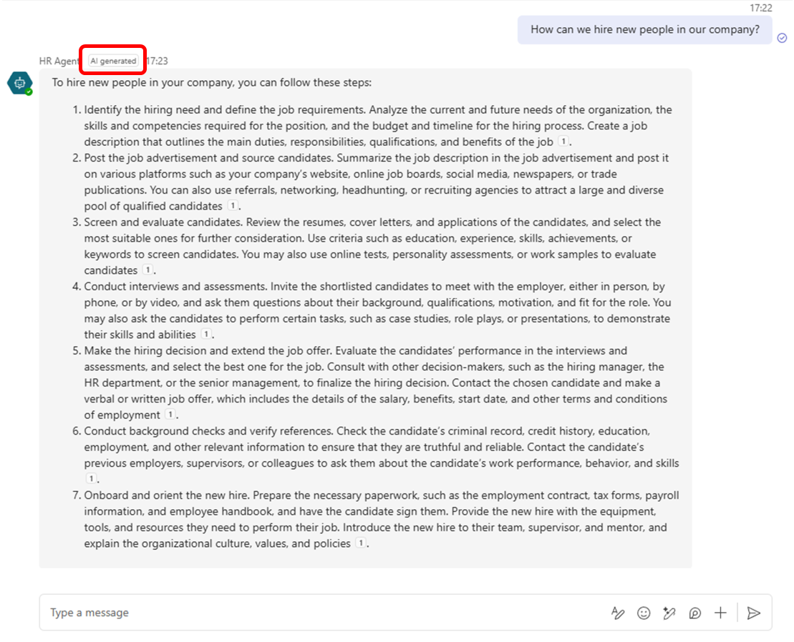
回答の先頭には「AI generated」である旨の注意書きがあり、ユーザー に AI プラットフォームの利用を知らせています。
おめでとうございます！
これでエージェントは完全に機能し、Microsoft Teams で利用可能になりました。次のラボでは、動作をさらにカスタマイズし細部を調整します。
こちらから Lab MCS2 を開始し、Copilot Studio で エージェント のトピックを定義しましょう。